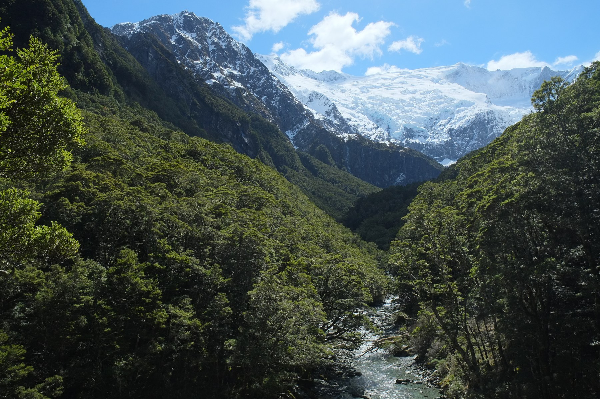

Lush has been accused of using its multimillion-pound partnership with the Organisation for the Conservation of Endangered Species (OCES) to repair its public image after the company’s sourcing practices were linked to the decline of the endangered Orange-fronted Parakeet.
The cosmetics company recently announced major funding for OCES and its flagship reproductive conservation programme, Project EROS, presenting the partnership as part of a wider commitment to wildlife protection.
Under the agreement, Lush will fund research, breeding programmes and experimental wearable technology designed to improve courtship success among endangered birds. The company’s branding is also expected to appear across selected OCES campaigns, with proposals reportedly including the placement of the Lush logo on future Bird Lingerie prototypes.
But environmental campaigners say the partnership tells only part of the story.
The food behind the foam
Before becoming an OCES sponsor, Lush had used materials derived from beech forest resources in a range of organic bath bombs. Orange-fronted Parakeets rely heavily on seeds, particularly those produced by beech trees, as a major food source.
As demand for the products grew, harvesting increased across several forest areas. Critics argue that this placed additional pressure on the birds’ food supply at a time when their population was already struggling because of habitat loss and wider ecological disruption.
The resulting decline in available beech seeds was later associated with poorer nutrition and reduced reproductive success among Orange-fronted Parakeet populations.

It was only after growing public concern over the ecological impact of the supply chain that Lush announced its partnership with OCES.
The company has framed the agreement as an environmental initiative intended to “support the recovery of vulnerable bird populations”. However, opponents say the sponsorship amounts to little more than crisis management dressed as conservation.
When conservation becomes advertising
“They helped create the problem, and now they want their logo on the solution,” said a spokesperson for the activist group FREE — the Front for Reproductive Ethics and Ecological Autonomy.
FREE condemned the move as “damage control disguised as conservation”, calling the partnership an attempt to cover up the company’s own contribution to the crisis. The group accused Lush of using conservation funding to divert public attention from the pressure its former supply chain had placed on the birds’ food source.
Critics have also questioned whether OCES is becoming increasingly dependent on corporate funding.
What began as a publicly backed conservation programme has gradually attracted fashion, cosmetics and lifestyle brands seeking to associate themselves with endangered species. Campaigners fear that corporate sponsors could begin influencing which species receive funding, what conservation technologies are developed and how those projects are presented to the public.
The controversy has raised a broader question over the future of Project EROS: when conservation becomes valuable advertising space, are endangered animals still being protected — or are they becoming branded assets?
For Lush, the partnership offers an opportunity to position itself at the centre of one of the world’s most visible conservation programmes.
For the Orange-fronted Parakeet, critics say, the damage may already have been done.